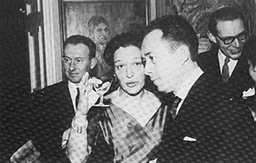

1913 - Naissance, le 13
novembre, d'Albert Camus à Mondovi, près de Bône (
Algérie ).
1914 - Camus ne connaîtra
pas son père : Lucien Camus, mobilisé et blessé à
la bataille de la Marne, meurt à l'hôpital militaire de Saint-Brieuc.
Albert Camus, élevé par sa mère - une femme de ménage
analphabète - et par sa grand-mère, "apprend la misère"
dans le quartier populaire de Belcourt, à Alger.
1923/1924
- A l'école communale, au CM2, un instituteur, Louis Germain ( auquel
seront dédiés les Discours de Suède, prononcés
à l'occasion de la remise du prix Nobel de littérature ),
distingue l'enfant, s'intéresse à lui, l'aide, et convainc
sa famille de présenter le jeune écolier au concours des
bourses qui allait lui permettre d'aller au lycée. Reçu,
Camus entre au lycée Bugeaud d'Alger en 1924.
1930 - Camus est en classe
de philosophie. Premières atteintes de la tuberculose, maladie qui
lui fait brutalement prendre conscience de l'injustice faite à l'homme
( la mort est le plus grand scandale de la création ) et qui aiguise
son appétit de vivre dans le seul monde qui nous soit donné.
1932 - Premiers essais,
premiers écrits publiés dans la revue Sud.
1931 - Rencontre du professeur
et philosophe Jean Grenier.
1933 - Étude de
philosophie à la faculté d'Alger.
1934 - Mariage en juin
avec Simone Hié. Ils se sépareront l'année suivante.
1935/1937 - Adhésion
au parti communiste.
1936/1939 - Au Théâtre
du Travail, puis au Théâtre de l'Equipe, Camus joue ( et adapte
) de nombreuses pièces ( Le temps du mépris de Malraux, Les
bas-fonds de Gorki, Le retour de l'enfant prodigue de Gide, Les frères
Karamazov de Dostoïevski, dans l'adaptation de Copeau, etc. ).
1937 - Publication de
L'envers et l'endroit, écrit de jeunesse qui témoigne de
son enfance, et livre quelques clés essentielles de son univers.
Élaboration du premier roman, La mort heureuse.
1938/1939 - Chroniques
journalistiques "engagées" dans Alger Républicain.
1940 - Journaliste à
Alger, Paris, Clermont-Ferrand et Lyon. Travaille aux "trois Absurdes"
: L'étranger ( un roman ), Le mythe de Sisyphe ( un essai ) et Caligula
( une pièce de théâtre ). Le "cycle" est achevé
le 21 février 1941. Remariage avec Francine Faure qui lui donnera
deux enfants, Catherine et Jean.
1942 - Publication de
L'étranger(
15 juin ) et du Mythe de Sisyphe ( 16 octobre ).
1943 - Rencontre avec
Sartre.
Camus est journaliste à combat qui est diffusé clandestinement
et devient lecteur chez Gallimard. Publication clandestine des premières
Lettres à un ami allemand.
1945 - Première
représentation de Caligula.
1947 - Publication de
La peste ( 10 juin ), roman qui rencontre immédiatement un grand
succès auprès du public.
1949 - Décembre
: première représentation des Justes.
1951 - Publication de
L'homme révolté essai qui suscitera de violentes polémiques
et entraînera, en 1952 , la rupture de Camus avec la gauche communiste,
avec Sartre et sa revue, Les
temps modernes.
1953 - Camus revient
au théâtre, passion qui dominera toutes les dernières
années de sa vie . Il traduit et adapte Les esprits ( comédie
de Pierre de Larivey ) , La dévotion à la croix ( de Pedro
Caldero'n ) qu'il présente au festival d'Angers (juin ). En octobre,
projetant de mettre en scène Les possédés, il travaille
à l'adaptation du grand roman de Dostoïevski.
1953 - Camus revient
au théâtre, passion qui dominera toutes les dernières
années de sa vie . Il traduit et adapte Les esprits ( comédie
de Pierre de Larivey ) , La dévotion à la croix ( de Pedro
Caldero'n ) qu'il présente au festival d'Angers (juin ). En octobre,
projetant de mettre en scène Les possédés, il travaille
à l'adaptation du grand roman de Dostoïevski.
1954 - Printemps : publication
de L'été
- 4,5,6 octobre : court
voyage aux Pays-Bas, unique séjour de Camus dans ce pays qui sert
de cadre à La chute. Camus demeura
deux jours à Amsterdam ; à la Haye, il visita le célèbre
musée Mauritshuis, où il admira plus particulièrement
les Rembrandt.
- Premier novembre :
le FLN ( le Front de libération nationale ) algérien passe
à l'attaque ( meurtre de civils arabes et français). Début
de la guerre d'Algérie qui fut pour Camus "un malheur personnel".
1955 - Mars : représentation
d'Un cas intéressant ( adaptation d'une pièce de Dino Buzzati
).
-Avril 1955 : premier
voyage de Camus en Grèce, lumineux berceau de la civilisation méditerranéenne,
terre de "la pensée de midi" (conclusion de L'homme révolté
).
-Mai 1955-février
1956 : Camus écrit dans L'express des chroniques où il traite
de la crise algérienne ( ces "papiers" seront réunis plus
tard et publiés sous le titre d'Actuelles III ).
1956 - 22 janvier : Camus
lance un appel pour une trêve civile en Algérie. Appel qui
ne rencontre aucun écho. De part et d'autre, les positions se durcissent,
les actes de terrorisme se multiplient, le conflit se généralise.
-Mai : publication de
La chute.
-22 septembre : première
représentation triomphale de Requiem pour une nonne, adaptation
de l'œuvre de Faulkner.
1957 - L'exil et le royaume.
-Réflexions sur
la guillotine ( vibrant plaidoyer contre la violence "légale", contre
la peine de mort ).
-Représentation
du Chevalier d'Olmedo ( adaptation de la pièce de Lope de Vega )
au festival d'Angers ( juin ).
-Décembre : Camus
obtient le prix Nobel de littérature "pour l'ensemble d'une œuvre
qui met en lumière, avec un sérieux pénétrant,
les problèmes qui se posent de nos jours à la conscience
des hommes"
1958
- Dépression. Parution de Discours de Suède et d'Actuelles
III. Achète une maison à Lourmarin dans le Lubéron.
1959 - Représentation
des Possédés. Camus entreprend de nombreuses démarches
pour donner corps à un vieux rêve : fonder sa propre compagnie
théâtrale.
Travaille sur un roman,
Le premier homme, texte à caractère autobiographique inachevé,
et posthume ( publication en 1994).
1960 - 4 janvier : mort
d'Albert Camus dans un accident de voiture près de Sens.